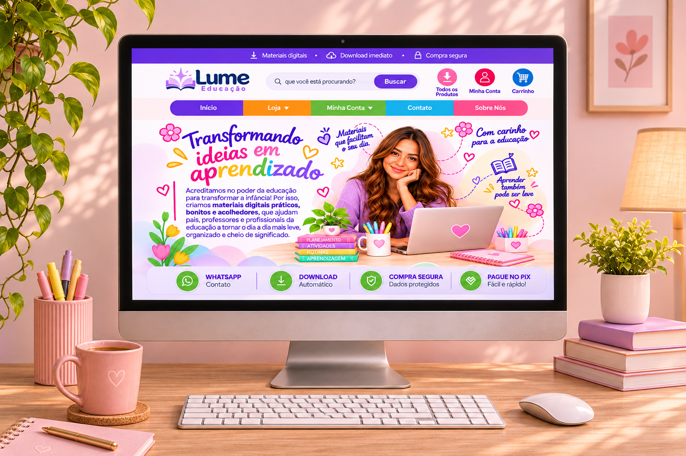
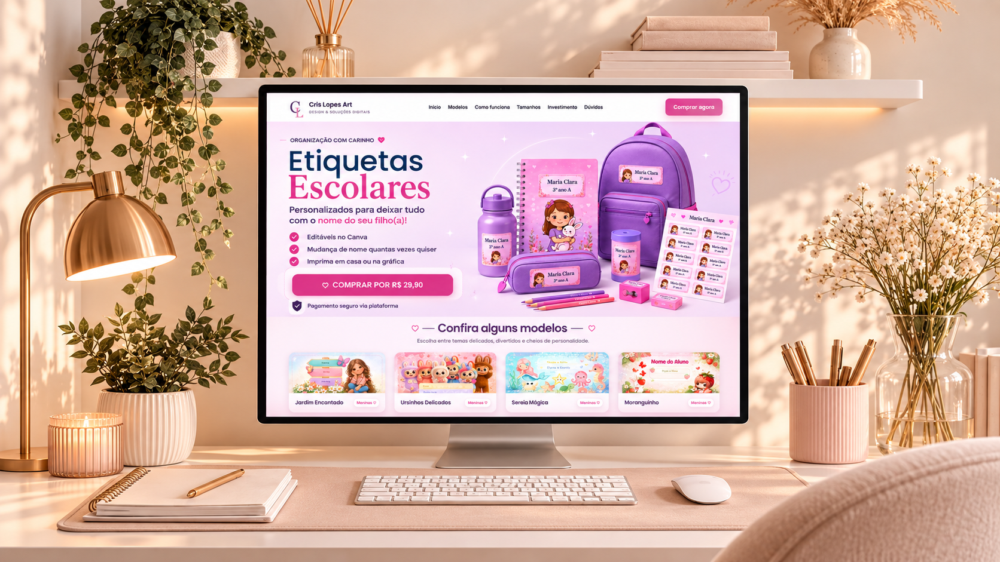
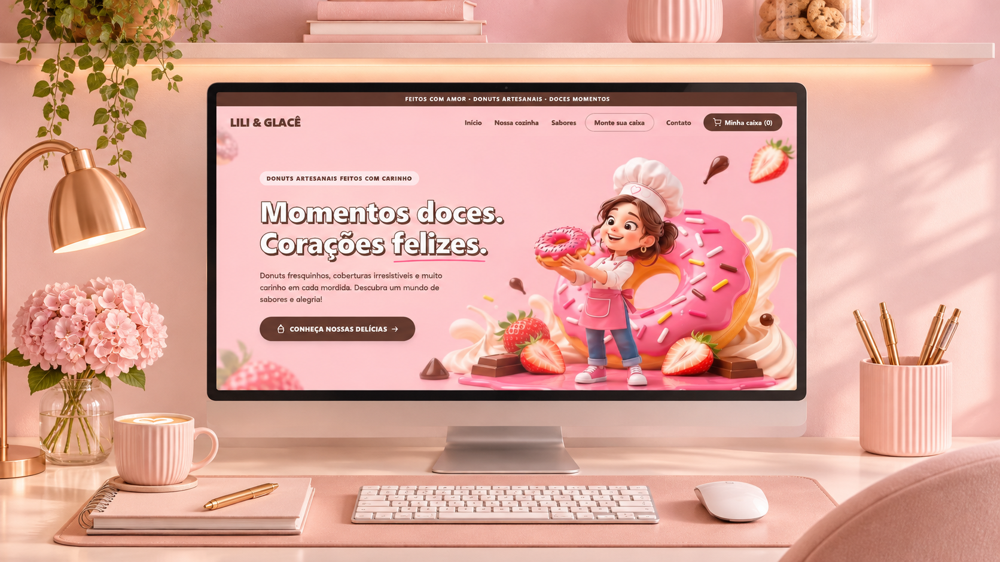

🛍 Loja virtual

Conheça alguns dos sites, lojas virtuais e projetos interativos que desenvolvi com criatividade, carinho e tecnologia.
Explorar projetosExplore cada categoria e navegue pelas setas.
Lojas e vitrines digitais criadas para apresentar produtos e facilitar compras.


Projeto de vitrine digital com visual delicado e navegação responsiva.
Ver projetoProjeto de loja digital com apresentação de produtos e identidade personalizada.
Ver projeto ↗
Conceito de loja de arquivos digitais, com vitrine de produtos criativos.
Ver apresentaçãoExperiências digitais para empresas e projetos com animações.

Site institucional responsivo, desenvolvido para apresentar serviços e facilitar o contato.
Ver projeto
Experiência imersiva de uma doceria, com animações e interações na rolagem.
Visitar sitePáginas personalizadas para divulgar marcas, serviços e links.

Sites profissionais, lojas virtuais e experiências digitais feitas para o seu negócio.
Conheça também os detalhes dos meus trabalhos criativos.
Se o site não carregar aqui, clique em “Abrir em outra aba”. Alguns sites bloqueiam visualização incorporada.